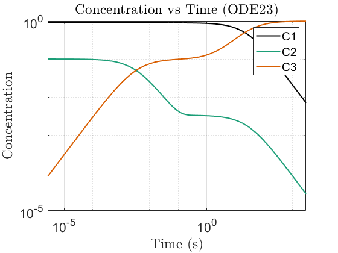
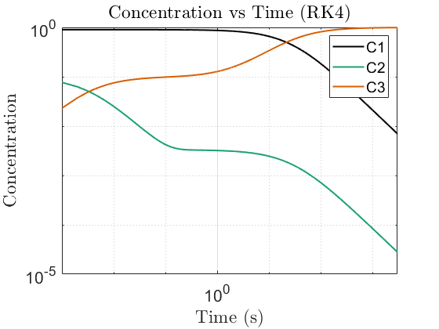
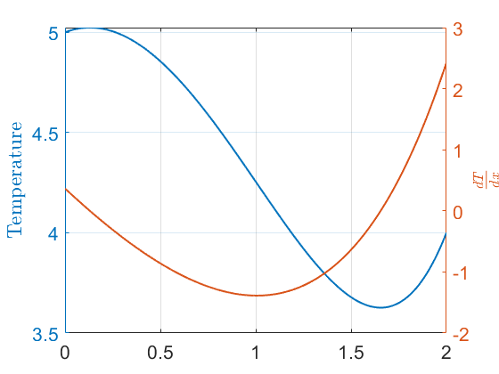
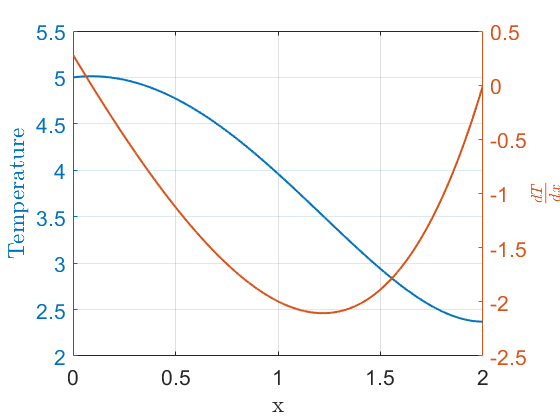
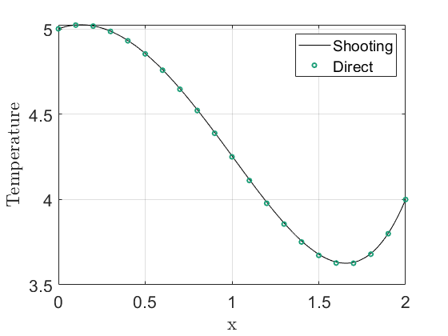

Contents
%{ @author: Benjamin Bemis Ph.D Student, Advisor: Dr Juliano Description: AME 60614: Numerical Methods Homework: 6 Due: 11/22/2024 %}
Preperation of the workspace
clear all clc close all fontsize = 16; % set(0,'DefaultFigureWindowStyle','default') set(0,'DefaultTextInterpreter','latex') set(0,'DefaultAxesFontSize',fontsize) set(0,'DefaultLegendFontSize',fontsize) colors = ["#000000","#1b9e77","#d95f02","#7570b3","#0099FF"]';
Setting data paths
Make sure to update this for the machine that you are working on. (Maybe, This should now run on any machine without change. 7/24/24) Change the current folder to the folder of this m-file.
if(~isdeployed) cd(fileparts(matlab.desktop.editor.getActiveFilename)); end addpath(cd) % cd ..; % Moving up a directory (from processing_code) basepath = cd; % Pulling the current directory imagepath = [basepath filesep 'images' filesep]; mkdir(imagepath);
Warning: Directory already exists.
Problem 21 Chapter 4
tol = 1e-6;
c1_0 = 0.9;
c2_0 = 0.1;
c3_0 = 0;
k1 = 0.04;
k2 = 10;
k3 = 1.5e3;
A = [-k1 k2*c3_0 k2*c2_0;
k1 -k2*c3_0-4*k3*c2_0 -k2*c2_0;
0 4*k3*c2_0 0];
lambda = eig(A);
stiffness = lambda(1)/lambda(3);
% Time span
tspan = [0 3000];
% Initial conditions
C0 = [0.9; 0.1; 0];
stab = @(h) lambda(1)*h + (lambda(1)^2*h^2)/2 +(lambda(1)^3*h^3)/6+(lambda(1)^4*h^4)/24 ;
[root,err] = Nraph(stab,0.01,tol)
% Define the system of ODEs
% Solve using ode23s (stiff solver)
options = odeset('RelTol', 1e-6, 'AbsTol', 1e-9);
tic
[t_stiff, C_stiff] = ode23s(@reaction_rates, tspan, C0, options);
toc
tic
[t_RK, C_RK] = RK4(@reaction_rates, C0, 0, 3000, 1e-3);
toc
tic
[t_trap, C_trap] = trapezoidal_s(@reaction_rates, C0, 0, 3000, 1e-3);
toc
% Plotting the results
figure;
loglog(t_stiff, C_stiff(:,1), '-', 'LineWidth', 1.5, 'Color', colors(1), 'DisplayName', 'C1');
hold on;
loglog(t_stiff, C_stiff(:,2), '-','LineWidth', 1.5, 'Color', colors(2), 'DisplayName', 'C2');
hold on
loglog(t_stiff, C_stiff(:,3), '-','LineWidth', 1.5, 'Color', colors(3), 'DisplayName', 'C3');
xlabel('Time (s)');
ylabel('Concentration');
legend;
xlim(tspan)
title('Concentration vs Time (ODE23)');
grid on;
print(gcf,[imagepath,'Q23_ode23.png'],'-dpng');
figure;
loglog(t_RK, C_RK(1,:), '-','LineWidth', 1.5, 'Color', colors(1), 'DisplayName', 'C1');
hold on;
loglog(t_RK, C_RK(2,:), '-','LineWidth', 1.5, 'Color', colors(2), 'DisplayName', 'C2');
hold on
loglog(t_RK, C_RK(3,:), '-','LineWidth', 1.5, 'Color', colors(3), 'DisplayName', 'C3');
xlabel('Time (s)');
ylabel('Concentration');
legend;
title('Concentration vs Time (RK4)');
xlim(tspan)
grid on;
print(gcf,[imagepath,'Q23_RK4.png'],'-dpng');
figure;
loglog(t_trap, C_trap(1,:), '-','LineWidth', 1.5, 'Color', colors(1), 'DisplayName', 'C1');
hold on;
loglog(t_trap, C_trap(2,:), '-','LineWidth', 1.5, 'Color', colors(2), 'DisplayName', 'C2');
hold on
loglog(t_trap, C_trap(3,:), '-','LineWidth', 1.5, 'Color', colors(3), 'DisplayName', 'C3');
xlabel('Time (s)');
ylabel('Concentration');
legend;
title('Concentration vs Time (Trap)');
xlim(tspan)
grid on;
print(gcf,[imagepath,'Q23_trap.png'],'-dpng');
  Problem 26 Chapter 4: part a
tol = 1e-6; Ta = 0; T0 = 5; TL = 4; xL = 2; x_init = 0; xRange = [x_init xL]; BC = [T0, TL]; h = 0.001; alpha = @(x) -(x+3)/(x+1); beta = @(x) (x+3)/(x+1).^2; f = @(x) 2*(x+1) + 3*beta(x); f_temp = @(x,T,Tp) -alpha(x)*Tp -beta(x)*T +f(x); [x_a, y, yp] = shoot(f_temp,xRange,BC , h, -.01 ,tol); figure yyaxis left plot(x_a,y,'LineWidth', 1.5) hold on ylabel('Temperature'); yyaxis right plot(x_a,yp,'LineWidth', 1.5) xlim(xRange) ylabel('$\frac{dT}{dx}$'); grid on print(gcf,[imagepath,'Q26_shoot.png'],'-dpng'); % % testing against ode 45 % f_van = @(x,T,Tp) (1-T^2)*Tp-T; % [xt, yt, ytp] = shoot(f_van,[0 20],[2,2] , h, -.01 ,tol); % % figure % yyaxis left % plot(xt,yt) % hold on % yyaxis right % plot(xt,ytp) % part a) iii. [x, ydf, ypdf] = shootdf(f_temp,xRange,[5,0] , h, -.01 ,tol); figure yyaxis left plot(x,ydf, 'LineWidth', 1.5) hold on ylabel('Temperature'); yyaxis right plot(x,ypdf, 'LineWidth', 1.5) xlim(xRange) grid on xlabel('x'); ylabel('$\frac{dT}{dx}$'); print(gcf,[imagepath,'Q26_shoot2.png'],'-dpng');
"counter = " "1"
err =
7.1917
"counter = " "2"
err =
2.3919
err =
7.9492e-14
ans =
0.3652
"counter = " "1"
err =
8.2856
"counter = " "2"
err =
5.9925
err =
2.4919e-13
ans =
0.2801
  Problem 26 Chapter 4: part b
L = 2; N = 21; % Number of points x = linspace(0, L, N); % Discretized grid points dx = L / (N-1); % Grid spacing T_A = 5; % Boundary condition at x = 0 T_B = 4; % Boundary condition at x = L % Initialize A matrix and f vector A = zeros(N, N); f_vec = zeros(N, 1); % Set boundary conditions in f vector f_vec(1) = T_A; f_vec(N) = T_B; % Fill the A matrix and f vector for j = 2:N-1 xj = x(j); a_j = alpha(xj); b_j = beta(xj); f_j = f(xj); % Coefficients for T_{j-1}, T_j, T_{j+1} A(j, j-1) = 1 / dx^2 - a_j / (2 * dx); A(j, j) = -2 / dx^2 + b_j; A(j, j+1) = 1 / dx^2 + a_j / (2 * dx); % Right-hand side value f_vec(j) = f_j; end % Boundary conditions A(1,1) = 1; A(N,N) = 1; % Solve the system AT = f T = A \ f_vec; % Plotting the results figure; plot(x_a,y,'k') hold on plot(x, T, 'o', 'MarkerSize', 4, 'LineWidth', 1.5, Color=colors(2)); xlabel('x'); ylabel('Temperature'); % title('Temperature Distribution using Finite Difference'); grid on; legend('Shooting',"Direct"); print(gcf,[imagepath,'Q26_direct.png'],'-dpng');
Problem 27 Chapter 4
Functions
function [root,err] = Nraph(f,initGuess,tol) %Nraph solves for the root nearest the initial guess using the Newt-Raphson %method. % INPUTS: % f: is a function handle. % initGuess: is the inital guess for the root. % tol: desired tolerance. % OUTPUTS: % root: nearest root to initial guess. % err: error in the solution of the root. x = initGuess; x(2) = initGuess+1; counter = 2; while abs(f(x(end))) >= tol x(counter+1) = x(counter) - f(x(counter)) * (x(counter)-x(counter-1))/(f(x(counter))-f(x(counter-1))); counter = counter+1; end root = x(counter); err = abs(f(root)); end function [x, y1, y2] = shoot(f,xRange, BC, h, dx_guess ,tol) % x = xRange(1):h:xRange(2); dx = dx_guess; dx(2) = dx_guess+.5; % y1 = inf; % [x, y1, y2] = RK4_2(f, BC(1), dx_guess, xRange(1), xRange(2), h); counter = 1; while abs(y1(end)- BC(2)) >= tol if counter == 1 [x, y1, y2] = RK4_2(f, BC(1), dx_guess, xRange(1), xRange(2), h); disp(["counter = ", string(counter)]) elseif counter == 2 [x, y1, y2] = RK4_2(f, BC(1), dx_guess+.5, xRange(1), xRange(2), h); disp(["counter = ", string(counter)]) dx(counter+1) = dx(counter) - (y1(end)-BC(2)) * (dx(counter) - dx(counter-1))/ (y1(end)-y_prev(counter)); elseif counter > 2 [x, y1, y2] = RK4_2(f, BC(1), dx(counter), xRange(1), xRange(2), h); dx(counter+1) = dx(counter) - (y1(end)-BC(2)) * (dx(counter) - dx(counter-1))/ (y1(end)-y_prev(counter)); end y_prev(counter+1) = y1(end); err = abs(y1(end)- BC(2)) counter = counter+1; end dx(end-1) end function [x, y1, y2] = shootdf(f,xRange, BC, h, dx_guess ,tol) % x = xRange(1):h:xRange(2); dx = dx_guess; dx(2) = dx_guess+.5; % y2 = inf; % [x, y1, y2] = RK4_2(f, BC(1), dx_guess, xRange(1), xRange(2), h); counter = 1; while abs(y2(end)- BC(2)) >= tol if counter == 1 [x, y1, y2] = RK4_2(f, BC(1), dx_guess, xRange(1), xRange(2), h); disp(["counter = ", string(counter)]) elseif counter == 2 [x, y1, y2] = RK4_2(f, BC(1), dx_guess+.5, xRange(1), xRange(2), h); disp(["counter = ", string(counter)]) dx(counter+1) = dx(counter) - (y2(end)-BC(2)) * (dx(counter) - dx(counter-1))/ (y2(end)-y_prev(counter)); elseif counter > 2 [x, y1, y2] = RK4_2(f, BC(1), dx(counter), xRange(1), xRange(2), h); dx(counter+1) = dx(counter) - (y2(end)-BC(2)) * (dx(counter) - dx(counter-1))/ (y2(end)-y_prev(counter)); end y_prev(counter+1) = y2(end); err = abs(y2(end)- BC(2)) counter = counter+1; end dx(end-1) end function dCdt = reaction_rates(t, C) k1 = 0.04; k2 = 10; k3 = 1.5e3; % Unpack concentrations C1 = C(1); C2 = C(2); C3 = C(3); % System of differential equations dC1 = -k1 * C1 + k2 * C2 * C3; dC2 = k1 * C1 - k2 * C2 * C3 - 2 * k3 * C2^2; dC3 = 2 * k3 * C2^2; % Return as a column vector dCdt = [dC1; dC2; dC3]; end function [t, y1, y2] = RK4_2(f, y0, v0, t0, tf, h) % RK4_2 works for single equation odes % Inputs: % f - Function handle for y'' = f(t, y, y') % y0 - Initial condition for y (y(t0) = y0) % v0 - Initial condition for y' (y'(t0) = v0) % t0 - Initial time % tf - Final time % h - Step size % % Outputs: % t - Array of time steps % y1 - Array of solution values for y at each time step % y2 - Array of solution values for y' at each time step % Define the time vector from t0 to tf with step size h t = t0:h:tf; N = length(t); % Number of time steps y1 = zeros(1, N); % Preallocate y1 for y y2 = zeros(1, N); % Preallocate y2 for y' % Set the initial conditions y1(1) = y0; y2(1) = v0; % Apply the 4th-order Runge-Kutta method for n = 1:N-1 % Calculate k1 values k1_y1 = y2(n); k1_y2 = f(t(n), y1(n), y2(n)); % Calculate k2 values k2_y1 = y2(n) + h/2 * k1_y2; k2_y2 = f(t(n) + h/2, y1(n) + h/2 * k1_y1, y2(n) + h/2 * k1_y2); % Calculate k3 values k3_y1 = y2(n) + h/2 * k2_y2; k3_y2 = f(t(n) + h/2, y1(n) + h/2 * k2_y1, y2(n) + h/2 * k2_y2); % Calculate k4 values k4_y1 = y2(n) + h * k3_y2; k4_y2 = f(t(n) + h, y1(n) + h * k3_y1, y2(n) + h * k3_y2); % Update y1 and y2 using weighted average of slopes y1(n+1) = y1(n) + (h/6) * (k1_y1 + 2*k2_y1 + 2*k3_y1 + k4_y1); y2(n+1) = y2(n) + (h/6) * (k1_y2 + 2*k2_y2 + 2*k3_y2 + k4_y2); end end function [t, Y] = RK4(f, Y0, t0, tf, h) % RK4 - 4th-order Runge-Kutta method for systems of equations. % % Inputs: % f - Function handle for the system of equations, f(t, Y) % Y is a column vector, and f should return a column vector. % Y0 - Initial conditions as a column vector (Nx1, where N is the number of equations) % t0 - Initial time % tf - Final time % h - Step size % % Outputs: % t - Array of time steps % Y - Solution matrix (NxM, where N is the number of equations, M is the number of time steps) % Define the time vector from t0 to tf with step size h t = t0:h:tf; N = length(t); % Number of time steps num_eqns = length(Y0); % Number of equations in the system % Preallocate the solution matrix Y Y = zeros(num_eqns, N); % Set the initial conditions Y(:, 1) = Y0; % Apply the 4th-order Runge-Kutta method for each time step for n = 1:N-1 % Calculate k1 values k1 = f(t(n), Y(:, n)); % Calculate k2 values k2 = f(t(n) + h/2, Y(:, n) + h/2 * k1); % Calculate k3 values k3 = f(t(n) + h/2, Y(:, n) + h/2 * k2); % Calculate k4 values k4 = f(t(n) + h, Y(:, n) + h * k3); % Update Y using the weighted average of slopes Y(:, n+1) = Y(:, n) + (h/6) * (k1 + 2*k2 + 2*k3 + k4); end end function [t, Y] = trapezoidal_s(f, Y0, t0, tf, h) % trapezoidal_s - Linearized Trapezoidal method for systems of ODEs. % % Inputs: % f - Function handle for the system of equations, f(t, Y) % Y is a column vector, and f should return a column vector. % Y0 - Initial conditions as a column vector (Nx1, where N is the number of equations) % t0 - Initial time % tf - Final time % h - Step size % % Outputs: % t - Array of time steps % Y - Solution matrix (NxM, where N is the number of equations, M is the number of time steps) % Define the time vector from t0 to tf with step size h t = t0:h:tf; N = length(t); % Number of time steps num_eqns = length(Y0); % Number of equations in the system % Preallocate the solution matrix Y Y = zeros(num_eqns, N); % Set the initial conditions Y(:, 1) = Y0; % Apply the Linearized Trapezoidal method for each time step for n = 1:N-1 % Predictor step (Euler's method) Y_star = Y(:, n) + h * f(t(n), Y(:, n)); % Corrector step Y(:, n+1) = Y(:, n) + (h/2) * (f(t(n), Y(:, n)) + f(t(n+1), Y_star)); end end
root =
0.0046
err =
8.8988e-08
Elapsed time is 0.073169 seconds.
Elapsed time is 2.258758 seconds.
Elapsed time is 1.849003 seconds.